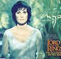

Celtic Lyrics Corner > Artists & Groups > Enya > May It Be > May It Be
|  | May It Be |
| Credits : | Enya; lyrics by Roma Ryan |
| Appears On : | May It Be (single); The Fellowship Of The Ring (soundtrack) |
| Language : | English & Quenya |
| Other Versions : |
"
May It Be
" on the Celtic Woman soundtrack
" May It Be " on Lisa Kelly's album Lisa |
| Lyrics : | English Translation : |
|
May it be an evening star shines down upon you
May it be when darkness falls your heart will be true You walk a lonely road Oh how far you are from home |
|
| Mornie utúlië | Darkness has come |
| Believe and you will find your way | |
| Mornie alantië | Darkness has fallen |
| A promise lives within you now | |
|
May it be the shadow's call will fly away
May it be your journey on to light the day When the night is overcome You may rise to find the sun |
|
| Mornie utúlië | Darkness has come |
| Believe and you will find your way | |
| Mornie alantië | Darkness has fallen |
|
A promise lives within you now
A promise lives within you now |